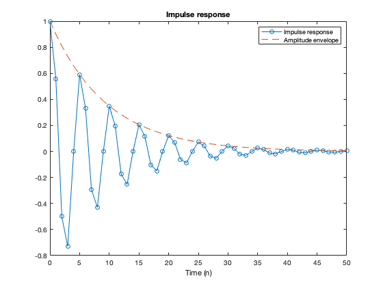
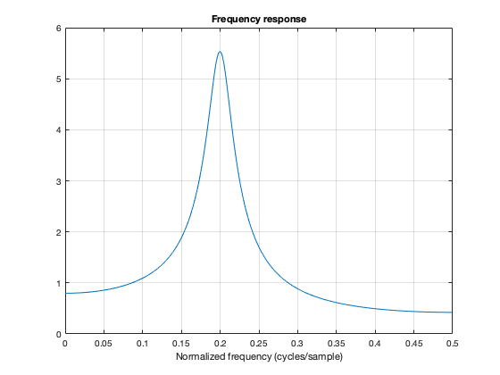
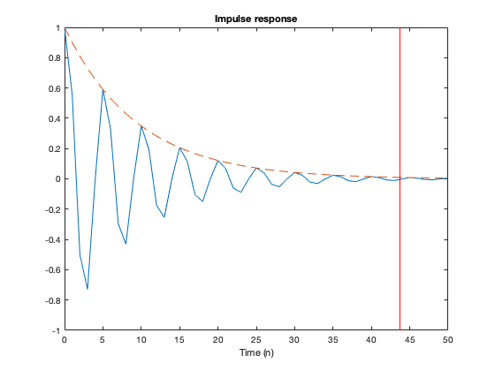
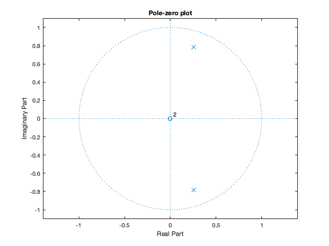
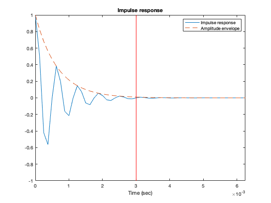
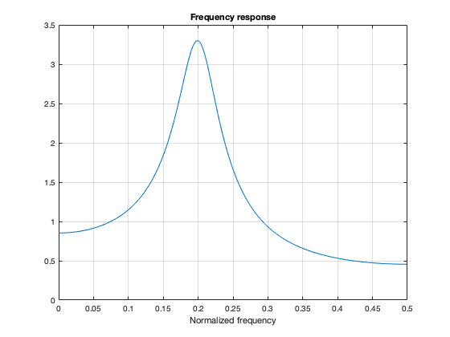
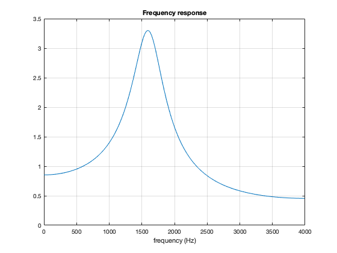

make_filter_01.m
Second-order recursive difference equation with prescribed poles.
Contents
clc clear
Difference equation
y(n) = b0 x(n) - a1 y(n-1) - a2 y(n-2)
f1 = 0.2; % normalized frequency (cycle/sample) om1 = 2*pi * f1; % normalized frequency (radian/sample) r = 0.9; % pole radius a1 = -2*r*cos(om1); a2 = r^2; a = [1 a1 a2] % recursive part (a0 = 1 in the difference equation) b = 1; % non-recursive part (b0 = 1 in the difference equation)
a =
1.0000 -0.5562 0.8100
Impulse response
Calculate the impulse response using the Matlab function 'filter'. Note that the amplitude envelope has the form r^n.
N = 50; n = 0:N; imp = [1 zeros(1, N)]; h = filter(b, a, imp); figure(1) clf plot(n, h, 'o-', n, r.^n, '--') legend('Impulse response', 'Amplitude envelope') xlabel('Time (n)') title('Impulse response')
Pole-zero plot
The poles are at z = r exp(om1 j) and z = r exp(-om1 j). This is a complex conjugate pair.
zplane(b, a) title('Pole-zero plot') print -dpdf -bestfit figures/make_filter_01_zplane_1
Frequency response
The frequency response has a peak at f1, as expected. (Why is this expected?)
[H, om] = freqz(b, a); f = om / (2*pi); plot(f, abs(H)) title('Frequency response') xlabel('Normalized frequency (cycles/sample)') grid print -dpdf -bestfit figures/make_filter_01_freqz_1
When does response decay to 1%?
When does the impulse response decay down to 1% of its initial value?
Na = log(0.01) / log(r) % samples plot(n, h, n, r.^n, '--', [Na Na], [-1 1], 'r') xlabel('Time (n)') title('Impulse response')
Na = 43.7087
Express in seconds (Ta)
If the filter operates at 8000 samples/second, then when does the impulse response decay down to 1% in seconds?
Fs = 8000; % samples/second Ta = Na / Fs % seconds plot(n/Fs, h, n/Fs, r.^n, '--', [Ta Ta], [-1 1], 'r') xlabel('Time (sec)') title('Impulse response') legend('Impulse response', 'Amplitude envelope') xlim([0 N/Fs]) print -dpdf -bestfit figures/make_filter_01_impresp_1
Ta =
0.0055

Design system with specified Ta
Let us make a system that has Ta = 0.003 seconds. What should the pole radius be?
Ta = 0.003; Na = Ta * Fs; r = 0.01^(1/Na)
r =
0.8254
Make the filter
difference equation
a = [1 -2*r*cos(om1) r^2] b = 1;
a =
1.0000 -0.5101 0.6813
Pole-zero diagram
zplane(b, a) title('Pole-zero plot') print -dpdf -bestfit figures/make_filter_01_zplane_2
Impulse response
h = filter(b, a, imp); plot(n/Fs, h, n/Fs, r.^n, '--', [Ta Ta], [-1 1], 'r') legend('Impulse response', 'Amplitude envelope') xlabel('Time (sec)') title('Impulse response') xlim([0 N/Fs]) print -dpdf -bestfit figures/make_filter_01_impresp_2
Frequency response (How is this frequency response different than the first one?)
[H, om] = freqz(b, a); f = om / (2*pi); plot(f, abs(H)) title('Frequency response') xlabel('Normalized frequency') grid print -dpdf -bestfit figures/make_filter_01_freqz_2
Frequency response (with frequency in Hz)
plot(f*Fs, abs(H)) title('Frequency response') xlabel('frequency (Hz)') grid
soundsc(h, Fs)